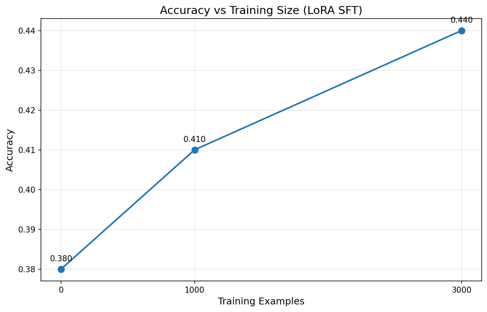
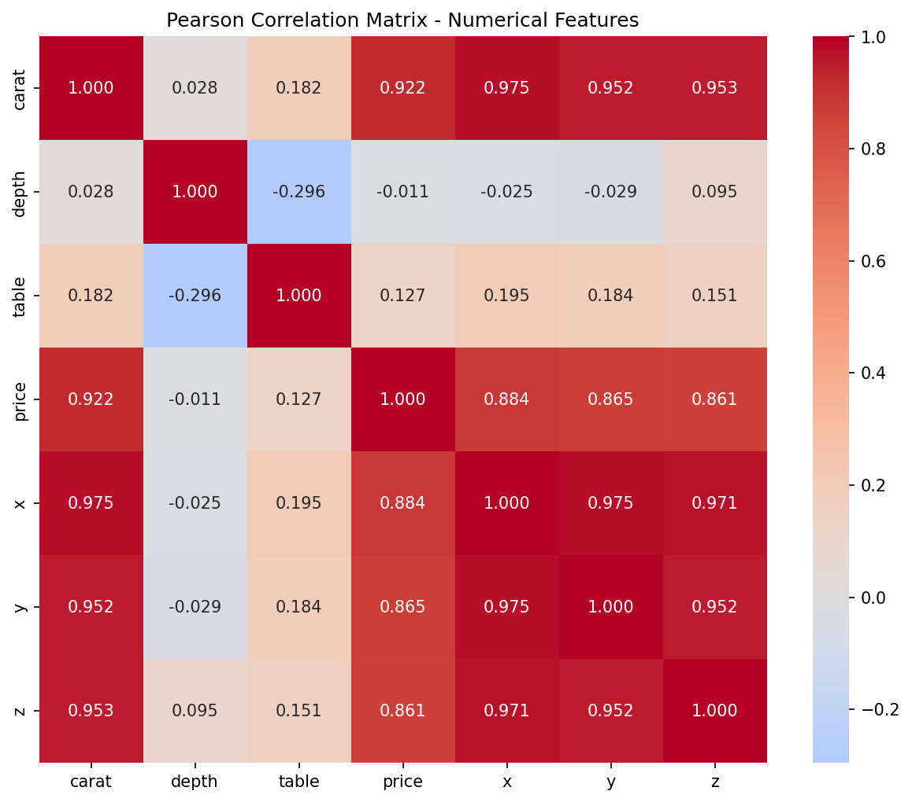
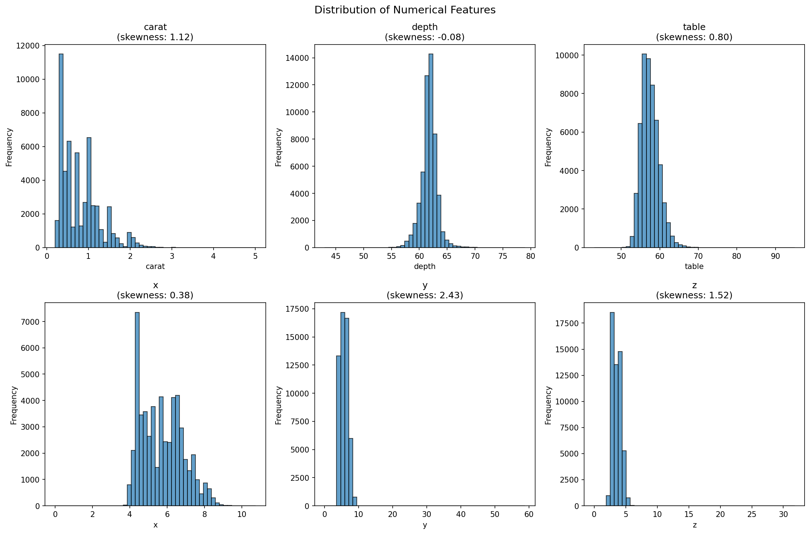
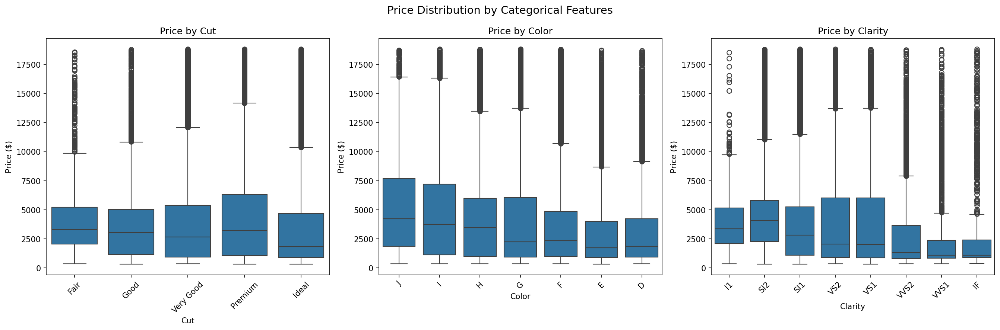

AI Disclaimer: AI tools were used to assist with code generation and formatting in this repository. All code has been tested, reviewed, and structured to ensure it works correctly and is easily replicable.
Note on Hyperparameters: Due to GPU memory constraints, the batch size and gradient accumulation values were swapped from the assignment defaults. The assignment specifies per-device batch size of 8 with gradient accumulation of 4, but the implementation uses per-device batch size of 4 with gradient accumulation of 8. This maintains the same effective batch size of 32 (\(4 \times 8 = 8 \times 4 = 32\)) while reducing peak memory usage.
Run the base Qwen2.5-1.5B-Instruct model on 100 GSM8K test questions and report the accuracy. You should expect approximately 35–40%. (Exact values may vary slightly depending on the prompt format and extraction rule.)
The base Qwen2.5-1.5B-Instruct model scored 38% on the GSM8K test set, landing right in the expected 35-40% range. The model struggles with multi-step reasoning and arithmetic, which is expected for a small language model without specific math training.
Inspect at least 3 cases where the base model produces an incorrect answer. For each example, include:
Classify each failure mode (e.g., arithmetic slip, reasoning/logical error, misunderstanding the problem, formatting/extraction issue). Do you observe any recurring patterns?
Failure Case 1: Arithmetic Error
Remaining eggs for sale = Remaining eggs after breakfast - Eggs used for baking muffins
= 13 - 4
= -1 (This is not possible since it would mean negative eggs)
Classification: Arithmetic Slip - The model correctly sets up the calculation (16 - 3 - 4 = 9) but then makes a catastrophic error by concluding this is -1 instead of 9.
Failure Case 2: Problem Comprehension
The robe requires half as much white fiber as blue fiber.
Therefore, the amount of white fiber is (1/2) bolt of blue fiber.
2 (blue fibers) + 1/2 (white fibers) = 2.5 bolts
Classification: Problem Comprehension - The model misinterpreted "half that much white fiber" as meaning half a bolt total, rather than half of 2 bolts (which is 1 bolt).
Failure Case 3: Multi-step Reasoning Error
Increase in value = Total cost × Percentage increase
Increase in value = $130,000 × 0.150 = $49,500
Profit = $129,500 - $130,000 = -$5,500
Classification: Multi-step Reasoning Error - The model made multiple errors: (1) applied 150% increase to total cost rather than original price, (2) used 0.150 instead of 1.50 for 150%.
Recurring Patterns:
Pick the three hyperparameters (LoRA rank, LoRA alpha, Gradient accumulation) from the table above and explain:
Your answer should reflect practical tradeoffs (e.g., compute/memory, stability, overfitting vs. underfitting).
LoRA Rank (r)
LoRA Alpha (α)
Gradient Accumulation
Report:
Briefly explain why this percentage is small and how LoRA achieves this reduction.
LoRA uses low-rank decomposition. Instead of updating a full weight matrix \(W \in \mathbb{R}^{d \times d}\) which needs \(d^2\) parameters, LoRA represents the update as \(\Delta W = BA\), where \(B \in \mathbb{R}^{d \times r}\) and \(A \in \mathbb{R}^{r \times d}\). This cuts parameters from \(d^2\) to \(2dr\). With rank \(r=8\) and typical dimension \(d=2048\), that's roughly \(128\times\) fewer parameters per adapted layer.
Train a LoRA SFT model using 1,000 training examples. Evaluate on 100 GSM8K test questions and report the accuracy. Include a brief comment on whether the improvement over the baseline matches your expectations.
Going from 38% to 41% is better, but not by much. This was smaller than what I expected. I assumed that with 1000 samples to fine-tune, we would get a larger improvement than just 3%.
Hypothesis question (write before running larger training): Do you think scaling from 1,000 examples to 3,000 and/or all 7,473 examples is worth the additional compute? What do you expect the accuracy gains to look like (roughly), and why? In your answer, discuss whether you would scale in multiple steps or jump directly to the full dataset.
Scaling isn't worth the extra compute past a certain threshold.
Expected Accuracy Gains:
More data = more pattern diversity, better generalization, stronger reasoning. However, GSM8K has redundancy, the model only has 0.14% trainable parameters, and there's a quality vs quantity trade-off. With too much data, there is a chance of overfitting. Scale in one step, but have an early stopping thereshold. Once the improvement starts to be small, we stop early, saving compute and time.
Now scale up your training data (recommended: 3,000 examples, and optionally the full 7,473). Evaluate each trained model on the same 100-question test subset and report the accuracies.
Finally, plot accuracy as a function of the number of training examples (x-axis: 0, 1000, 3000; y-axis: accuracy). Describe the trend you observe and comment on diminishing returns in data scaling for SFT.
| Training Examples | Accuracy | Improvement from Baseline |
|---|---|---|
| 0 (baseline) | 38% | - |
| 1,000 | 41% | +3% |
| 3,000 | 44% | +6% |
File: Scaling Plot

Analysis:
Compare the base model and your best SFT model on the same 3 failure examples you identified in Task 1. For each example, show both models' responses side by side. Does the SFT model fix any of these errors?
Case 1: Janet's Ducks (Ground Truth: 18)
Question: Janet's ducks lay 16 eggs per day. She eats three for breakfast every morning and bakes muffins for her friends every day with four. She sells the remainder at the farmers' market daily for $2 per fresh duck egg. How much in dollars does she make every day at the farmers' market?
Base Model Response:
To determine how much Janet makes every day at the farmers' market, we need to follow these steps:
1. Calculate the total number of eggs laid each day.
2. Determine how many eggs Janet eats for breakfast.
3. Subtract the number of eggs eaten from the total number of eggs laid to find out how many eggs are left for baking muffins.
4. Subtract the number of eggs used for baking muffins from the remaining eggs to find out how many eggs are sold at the farmers' market.
5. Calculate the revenue from selling the eggs at the farmers' market.
Let's go through each step in detail:
1. Total number of eggs laid each day: 16 eggs/day
2. Number of eggs eaten for breakfast: 3 eggs/day
3. Remaining eggs after breakfast: 16 - 3 = 13
4. Number of eggs used for baking muffins: 4 eggs/day
5. Remaining eggs for sale: 13 - 4 = -1 (This is not possible since it would mean negative eggs)
Therefore, the amount Janet makes every day at the farmers' market is: \boxed{0}
Extracted Answer: 0 (arithmetic error: 13 - 4 = -1)
SFT-3k Model Response:
The ducks lay 16*3=48 eggs for Janet to eat.
She has 48-3=45 eggs left after eating them for breakfast.
So she gives away 45/4=11.25 eggs to her friends.
That means there are 48-11.25=36.75 eggs remaining for sale.
Therefore, she makes 36.75*2=$\boxed{73.50}$ from selling the eggs at the farmers' market.
Extracted Answer: 73.50 (different error: hallucinated 16×3 multiplication)
Result: Both failed with different errors
Case 2: Robe Fabric (Ground Truth: 3)
Question: A robe takes 2 bolts of blue fiber and half that much white fiber. How many bolts in total does it take?
Base Model Response:
To determine the total number of bolts of fabric needed for the robe, we need to follow these steps:
1. Identify the amount of blue fiber required: 2 bolts of blue fiber.
2. Determine the amount of white fiber required: half as much white fiber as blue fiber.
Therefore, the amount of white fiber is (1/2) bolt of blue fiber.
3. Calculate the total: 2 (blue fibers) + 1/2 (white fibers) = 2 + 0.5 = 2.5 bolts
Thus, the total number of bolts of fabric needed is \boxed{2.5}.
Extracted Answer: 2.5 (misinterpreted "half that much" as 0.5 bolts)
SFT-3k Model Response:
The number of bolts of white fiber is 1/2*2=1 bolt.
In total, there are 2+1=3 bolts.
\boxed{3}
Extracted Answer: 3 (correctly interpreted as half of 2 bolts = 1 bolt)
Result: SFT fixed this error (Correct)
Case 3: House Flipping (Ground Truth: 70000)
Question: Josh decides to try flipping a house. He buys a house for $80,000 and then puts in $50,000 in repairs. This increased the value of the house by 150%. How much profit did he make?
Base Model Response:
To calculate Josh's profit from flipping the house:
1. Total cost = $80,000 + $50,000 = $130,000
2. Increase in value = Total cost × Percentage increase = $130,000 × 0.150 = $49,500
3. New selling price = Original price + Increase = $80,000 + $49,500 = $129,500
4. Profit = New selling price - Total cost = $129,500 - $130,000 = -$5,500
Therefore, Josh made a loss of $\boxed{-55500}$ on this flip.
Extracted Answer: -55500 (applied 0.150 instead of 1.5 for 150%)
SFT-3k Model Response:
The house was worth 80,000 + 50,000 = $130,000 after the repairs.
Its value went up by 150% so it is now worth 130,000 * .15 = $19,500 more.
So the total value of the house is now 130,000 + 19,500 = $149,500
He bought the house for 80,000 so his profit is 149,500 - 80,000 = $\boxed{69500}$
Extracted Answer: 69500 (still applied 0.15 instead of 1.5)
Result: Both failed with similar percentage calculation errors
Summary: SFT fixed 1/3 problems (language comprehension improved), but arithmetic and percentage reasoning remain hard.
Identify 2 examples where your best SFT model still fails. What types of errors persist?
Failure 1: Janet's Ducks - Multi-step reasoning with hallucinated operations
Failure 2: House Flipping - Percentage calculation error
Persistent error types (ranked by frequency):
Evaluate k-shot prompting (use k = 3) on:
Report the k-shot results alongside the corresponding no-demonstration baseline results, and compute the improvement (\(\Delta\)).
| Model | Zero-Shot Accuracy | 3-Shot Accuracy | Improvement (\(\Delta\)) |
|---|---|---|---|
| Base Model | 38% | 32% | -6% |
| SFT-3k Model | 44% | 50% | +6% |
Analyze the effect of few-shot prompting on each model:
Effect on Base Model (-6%)
Few-shot hurts because:
Effect on SFT Models (+6%)
Few-shot helps because:
SFT-3k benefits most (+6% vs -6%). Few-shot and SFT work together—SFT teaches reasoning style, few-shot reinforces it.
Qualitative reflection (short): Based on your results so far, what do you think is limiting performance? For each of the following, justify with 2–4 concrete observations from your own failures:
1. Arithmetic Reliability (Major limitation)
2. Multi-Step Planning (Primary limitation)
3. Problem Comprehension (Moderate limitation)
4. Output Consistency (Minor limitation)
5. Training Data Quality (Significant limitation)
Design and implement your favourite strategy to improve upon your best score. In your report, include:
(a) Hypothesis
Self-consistency through majority voting will improve accuracy by reducing random errors and leveraging the model's varying reasoning paths. By sampling multiple solutions and taking majority vote, we can filter out random errors.
(b) Method
(c) Results
| Method | Accuracy | Improvement |
|---|---|---|
| Baseline (SFT-3k, zero-shot) | 44% | - |
| Self-Consistency (n=10, temp=0.3) | 56% | +12% |
Example Success (Eliza's overtime, Ground Truth: 460):
(d) Analysis
What worked:
Failure Modes:
Key Learnings:
Self-consistency improved accuracy by 12% (44% → 56%) but can't fix systematic reasoning gaps. The gap to 70%+ requires better training data quality.
Implementation Note: This implementation uses the Qwen3-4B-Instruct-2507 model with 4-bit quantization (NF4) to fit within GPU memory constraints. The ReAct agent follows a structured approach with Planner, Coder, Executor, and Observer components, using Outlines for structured output generation.
Load da-dev-questions.jsonl and
da-dev-labels.jsonl. Report:
Question record keys:
id: Unique identifierquestion: Natural language questionconcepts: List of data analysis conceptsfile_name: Reference to CSV filelevel: Difficulty level (easy/medium/hard)format: Required answer format with @name[value] slots
constraints: Additional requirementsExample Question Record:
{
"id": 0,
"question": "Calculate the mean fare paid by the passengers.",
"concepts": ["Summary Statistics"],
"file_name": "test_ave.csv",
"level": "easy",
"format": "@mean_fare[mean_fare]",
"constraints": "Round to 2 decimal places."
}
Label record keys:
id: Question IDcommon_answers: List of [name, value] pairsExample Label Record:
{
"id": 0,
"common_answers": [
["mean_fare", "34.65"]
]
}
Pick 3 random question IDs. For each
df.shape,
df.dtypes, and df.head(3).
Example 1: Election Data (ID 142)
election2016.csv
df.shape: (3141, 10)
df.dtypes:
votes_dem float64
votes_gop float64
total_votes float64
per_dem float64
per_gop float64
diff object
per_point_diff object
state_abbr object
county_name object
combined_fips int64
dtype: object
df.head(3):
votes_dem votes_gop total_votes per_dem per_gop diff per_point_diff state_abbr county_name combined_fips
0 93003.0 130413.0 246588.0 0.377159 0.528870 37,410 15.17% AK Alaska 2013
1 93003.0 130413.0 246588.0 0.377159 0.528870 37,410 15.17% AK Alaska 2016
2 93003.0 130413.0 246588.0 0.377159 0.528870 37,410 15.17% AK Alaska 2020
Example 2: Insurance Data (ID 24)
insurance.csv
df.shape: (1338, 7)
df.dtypes:
age int64
sex object
bmi float64
children int64
smoker object
region object
charges float64
dtype: object
df.head(3):
age sex bmi children smoker region charges
0 19 female 27.9 0 yes southwest 16884.9240
1 18 male 33.77 1 no southeast 1725.5523
2 28 male 33.00 3 no southeast 4449.4620
Example 3: Storm Data (ID 429)
cost_data_with_errors.csv
df.shape: (818, 11)
df.dtypes:
Unnamed: 0 int64
name object
dates_active object
max_storm_cat int64
max_sust_wind float64
min_p float64
areas_affected object
damage_USD float64
deaths float64
year int64
damage_imputed int64
dtype: object
df.head(3):
Unnamed: 0 name dates_active max_storm_cat max_sust_wind min_p areas_affected damage_USD deaths year damage_imputed
0 0 ARLENE April 19 – 21 1 43.4488 990.0 NaN 0.0 0.0 2017 0
1 1 BRET June 19 – 20 1 43.4488 1007.0 Guyana, Venezuela, Trinidad and Tobago, Wind... 3000000.0 2.0 2017 0
2 2 CINDY June 20 – 23 1 52.1386 991.0 Honduras, Belize, Cayman Islands, Yucatán Pe... 25000000.0 2.0 2017 0
Find 2 examples where the required format contains multiple answer slots
(e.g., two or more @name[value] fields). Explain:
Example 1: Age Group Analysis (ID 6)
@mean_fare_child[mean_fare], @mean_fare_teenager[mean_fare],
@mean_fare_adult[mean_fare], @mean_fare_elderly[mean_fare]
Example 2: Multi-Class Distribution (ID 8)
@mean_fare_class1[mean_fare], @median_fare_class1[median_fare],
@std_dev_fare_class1[std_dev], ...
(9 total slots)
Dataset representation:
@name[value] slots[["mean_fare_child", "34.56"], ["mean_fare_adult", "42.78"]]
Automatic evaluation:
r"@(\w+)\[([^\]]+)\]"
Unfortunately, the model we are going to use is still not powerful enough to solve all the tasks. Here we are selecting 10 sub-tasks that are proved to be solvable:
The selected IDs are:
SELECTED_IDS = [0, 5, 9, 10, 14, 18, 24, 25, 26, 55].
| ID | Question | Concepts | File | Level |
|---|---|---|---|---|
| 0 | Calculate the mean fare paid by the passengers. | Summary Statistics | test_ave.csv | Easy |
| 5 | Generate a new feature called "FamilySize" by summing the "SibSp" and "Parch" columns. Then, calculate the Pearson correlation coefficient (r) between the "FamilySize" and "Fare" columns. | Feature Engineering, Correlation Analysis | test_ave.csv | Medium |
| 9 | Calculate the mean value of the "Close Price" column. | Summary Statistics | GODREJIND.csv | Easy |
| 10 | Check if the "Total Traded Quantity" column adheres to a normal distribution. | Distribution Analysis | GODREJIND.csv | Easy |
| 14 | Create a new feature called "Price Range" which represents the difference between the "High Price" and "Low Price" for each row. Calculate the mean, median, and standard deviation of this new feature. | Feature Engineering, Summary Statistics | GODREJIND.csv | Medium |
| 18 | Calculate the mean and standard deviation of the "Mar.2019" column. | Summary Statistics | unemployement_industry.csv | Easy |
| 24 | Calculate the mean age of the individuals in the dataset. | Summary Statistics | insurance.csv | Easy |
| 25 | Check if the distribution of BMI values in the dataset follows a normal distribution. | Distribution Analysis | insurance.csv | Easy |
| 26 | Calculate the correlation coefficient between the charges incurred by individuals and the number of children they have. | Correlation Analysis | insurance.csv | Easy |
| 55 | What is the mean number of cases recorded across all countries and years? | Summary Statistics | estimated_numbers.csv | Easy |
Demonstrate (with 5 different prompts) that your planner always returns
valid JSON that parses into your Pydantic model without try/except
fallbacks. Include at least one case where the planner decides it is
done (is_done=true).
Pydantic Schema:
class PlannerOutput(BaseModel):
thought: str = Field(min_length=10, max_length=500)
is_done: bool
response: str = Field(min_length=1)
Prompt 1: "The user asks: What is the average age of passengers?"
{
"thought": "To calculate the average age of passengers, I need access to a dataset containing passenger age values.",
"is_done": false,
"response": "Retrieve the passenger age data from the dataset and compute the mean age."
}
Prompt 2: "The user asks: How many passengers survived?"
{
"thought": "To determine the number of passengers who survived, I need access to a dataset containing passenger survival information, such as the Titanic dataset.",
"is_done": false,
"response": "Fetch the passenger survival dataset and count the number of survivors."
}
Prompt 3: "The user asks: What is the correlation between age and fare?"
{
"thought": "To determine the correlation between age and fare, I need access to a dataset containing both age and fare values.",
"is_done": false,
"response": "Retrieve the dataset containing age and fare columns, then compute the Pearson correlation coefficient between age and fare."
}
Prompt 4: "The user asks: Show me the distribution of passenger classes."
{
"thought": "To show the distribution of passenger classes, I need to analyze the 'Pclass' column in the dataset.",
"is_done": false,
"response": "Load the dataset and count the number of passengers in each passenger class (e.g., 1st, 2nd, 3rd). Then present the distribution in a clear, visual or tabular format."
}
Prompt 5: "Calculate the mean fare: @mean_fare[32.20] (final answer)"
{
"thought": "The mean fare is already provided as 32.20, so no further calculation is needed.",
"is_done": true,
"response": "}32.20{"
}
Note: All 5 outputs are valid JSON from the
Qwen3-4B-Instruct model with 4-bit quantization. Prompt 5 shows
is_done=true when the answer is ready to return. The
response format }32.20{ is the model's structured output
for final answers.
Explain in a few sentences why structured output is useful for large-scale data mining pipelines.
Structured output is essential for large-scale data mining pipelines for three reasons:
is_done=true, return answer; else
execute code"). Structured outputs provide machine-readable signals
for deterministic control flow.
Run your ReAct agent on the 10 tasks. Report:
Overall performance:
| Metric | Value |
|---|---|
| Accuracy | 90% (9/10 correct) |
| Correct | 9 tasks |
| Incorrect | 1 task |
Per-task results:
| Task ID | Result | Predicted | Ground Truth |
|---|---|---|---|
| 0 | Correct | @mean_fare[34.65] | @mean_fare[34.65] |
| 5 | Correct | @correlation_coefficient[0.21] | @correlation_coefficient[0.21] |
| 9 | Incorrect | @mean_close_price[583.68] | @mean_close_price[570.68] |
| 10 | Correct | @is_normal[no] | @is_normal[no] |
| 14 | Correct | @price_range_mean[16.65] @price_range_median[15.67] @price_range_std_dev[6.72] | @price_range_mean[16.65] @price_range_median[15.67] @price_range_std_dev[6.72] |
| 18 | Correct | @mean_mar_2019[171.44] @sd_mar_2019[188.25] | @mean_mar_2019[171.44] @sd_mar_2019[188.25] |
| 24 | Correct | @mean_age[39.21] | @mean_age[39.21] |
| 25 | Correct | @bmi_distribution[normal] | @bmi_distribution[normal] |
| 26 | Correct | @correlation_coefficient[0.07] | @correlation_coefficient[0.07] |
| 55 | Correct | @mean_cases[2081990] | @mean_cases[2081990] |
Trace 1: Success case (Task 0 - Mean Fare)
mean_fare = df['Fare'].mean()
print(f"{mean_fare:.2f}")
@mean_fare[34.65]Trace 2: Failure case (Task 9 - Mean Close Price)
@mean_close_price[583.68]
@mean_close_price[570.68]
Analysis: Numerical precision error. The computed value differs from ground truth due to different data preprocessing or NaN handling.
Trace 3: Error recovery case (Task 55 - Mean Cases)
Step 1 (First Attempt):
df['No. of cases'] = df['No. of cases'].str.extract(r'(\d+)').astype('int64')
mean_cases = df['No. of cases'].mean()
print(f"{mean_cases:.0f}")
Step 2 (Retry - Syntax Error):
df['No. of cases'] = df['No. of cases'].str.split('\[').str[0].astype(int)
Step 3 (Recovery):
df['No. of cases'] = df['No. of cases'].str.extract(r'(\d+)').astype(int)
mean_cases = df['No. of cases'].mean()
print(f"{mean_cases:.0f}")
@mean_cases[2081990]
Summary:
| Strength | Observation |
|---|---|
| Structured Output | All planner outputs valid JSON |
| Error Recovery | Recovered from syntax errors with alternative code |
| Multi-Step Reasoning | Handled feature engineering + correlation (Task 5) |
| Data Cleaning | Correctly parsed complex string formats (Task 55) |
| Weakness | Observation |
|---|---|
| Precision Issues | Task 9 off by ~2.3% from ground truth |
Perform an exploratory data analysis on the provided Diamonds dataset. Report the following:
Correlation analysis:
File: Correlation Heatmap

| Feature | Correlation with Price |
|---|---|
| carat | 0.9216 (strongest) |
| x | 0.8844 |
| y | 0.8654 |
| z | 0.8612 |
| table | 0.1271 |
| depth | -0.0106 (weakest) |
Observations:
Distribution analysis:
File: Histograms

| Feature | Skewness | Assessment | Transformation |
|---|---|---|---|
| y | 2.4342 | Highly skewed | Log |
| z | 1.5224 | Moderately skewed | Log |
| carat | 1.1166 | Moderately skewed | Log |
| table | 0.7969 | Slightly skewed | Optional |
| x | 0.3787 | Approximately symmetric | None |
| depth | -0.0823 | Approximately symmetric | None |
Recommendation: Apply log transformation to
carat, y, z to fix
right-skewness.
Categorical analysis:
File: Box Plots

Cut vs Price:
| Cut | Median Price |
|---|---|
| Fair | $3,282 |
| Premium | $3,185 |
| Good | $3,050 |
| Very Good | $2,648 |
| Ideal | $1,810 |
Trend: "Ideal" cut has lowest median price, "Fair" cut has highest median price, which is counterintuitive due to carat correlation.
Color vs Price:
| Color | Median Price |
|---|---|
| J | $4,234 |
| I | $3,730 |
| H | $3,460 |
| G | $2,242 |
| F | $2,343 |
| E | $1,739 |
| D | $1,838 |
Trend: Lower color grades (J, I, H) have higher prices (likely due to carat correlation).
Clarity vs Price:
| Clarity | Median Price |
|---|---|
| SI2 | $4,072 |
| I1 | $3,344 |
| SI1 | $2,822 |
| VS2 | $2,054 |
| VS1 | $2,005 |
| VVS2 | $1,311 |
| VVS1 | $1,093 |
| IF | $1,080 |
Trend: Lower clarity grades have higher prices, which is counterintuitive but explained by carat correlation.
Explain the following trade-off questions.
Encoding decisions:
| Feature | Encoding | Rationale |
|---|---|---|
| cut | Ordinal | Inherent order: Fair < Good < Very Good < Premium < Ideal |
| color | Ordinal | Inherent order: J < I < H < G < F < E < D |
| clarity | Ordinal | Inherent order: I1 < SI2 < SI1 < VS2 < VS1 < VVS2 < VVS1 < IF |
Trade-off 1: What information does one-hot encoding discard?
One-hot encoding discards ordinal relationships between categories:
Advantages:
Disadvantages:
Trade-off 2: What assumption must hold for scalar encoding?
Scalar (ordinal) encoding assumes:
Violation consequences: Non-monotonic or incorrect spacing introduces bias.
For diamonds, we chose ordinal because cut, color, clarity have established quality hierarchies. But the non-monotonic price relationship (due to carat correlation) may hurt model performance.
Standardize feature columns and prepare them for training. Save your
standardized version of the dataset as
diamonds_standardized.csv.
Implementation:
from sklearn.preprocessing import StandardScaler, LabelEncoder
# Encode categorical features
categorical_cols = ['cut', 'color', 'clarity']
for col in categorical_cols:
le = LabelEncoder()
df[col + '_encoded'] = le.fit_transform(df[col])
# Select features
numerical_cols = ['carat', 'depth', 'table', 'x', 'y', 'z']
encoded_categorical = ['cut_encoded', 'color_encoded', 'clarity_encoded']
all_features = numerical_cols + encoded_categorical
# Standardize
scaler = StandardScaler()
df_standardized = pd.DataFrame(
scaler.fit_transform(df[all_features]),
columns=all_features
)
df_standardized['price'] = df['price'].values
df_standardized.to_csv('diamonds_standardized.csv', index=False)
Output: File saved as
diamonds_standardized.csv
Print the top 5 features using each method (mutual_info_regression
and f_regression).
diamonds-questions.jsonl and
diamonds-labels.jsonl (question id 0 and 1) and use your
ReAct agent from Part 2 to automatically identify and print the top
features. If the agent gets stuck, you may manually write the code to
compute and print them.
From this point on, you are free to use any combination of features, as long as the performance on the regression model is on par (or slightly worse) than the Neural Network model.
Save your selected feature new csv as
diamonds_selected.csv.
Mutual Information Top 5:
| Rank | Feature | MI Score |
|---|---|---|
| 1 | carat | 1.9622 |
| 2 | y | 1.4912 |
| 3 | x | 1.4832 |
| 4 | z | 1.4329 |
| 5 | clarity | 0.3607 |
F-Regression Top 5:
| Rank | Feature | F-Score |
|---|---|---|
| 1 | carat | 304050.9059 |
| 2 | x | 193740.2791 |
| 3 | y | 160914.4818 |
| 4 | z | 154922.1211 |
| 5 | color | 1654.4319 |
Agentic integration:
@top5_mi[carat, y, x, z, clarity] and
@top5_f[carat, x, y, z, color]
Analysis:
carat,
x, y, z as top 4
clarity 5th;
F-regression ranks color 5th
carat,
x, y, z,
color (from F-regression top 5)
Output: File saved as
diamonds_selected.csv
Agentic Integration: For this step, load
diamonds-questions.jsonl and
diamonds-labels.jsonl (question ids 2, 3, and 4) and use
your ReAct agent from Part 2 to automatically train the models and
extract the necessary metrics. If the agent gets stuck, you may manually
write the code to complete the training.
Important: List out the Python code generated by your agent for these tasks. Review the code to ensure it makes sense and correctly implements the requested regression models. Do not blindly trust the agent's output; verify its logic before proceeding.
What is the objective function? Train three models: (a) ordinary least squares (linear regression without regularization), (b) Lasso and (c) Ridge regression, and answer the following questions.
Objective Function:
$$\min_{\beta} \frac{1}{2n} \sum_{i=1}^{n} (y_i - \beta_0 - \sum_{j=1}^{p} \beta_j x_{ij})^2$$
Results:
| Model | Optimal Alpha | Validation RMSE | Training RMSE |
|---|---|---|---|
| OLS | N/A | 1217.58 | 1216.55 |
| Lasso | 3.6766 | 1217.13 | 1217.15 |
| Ridge | 10000.0 | 1475.95 | 1460.29 |
Best model: Lasso Regression (α = 3.6766, RMSE = 1217.13)
How regularization affects learned parameters:
OLS (No Regularization):
Lasso (L1 Regularization):
$$\min_{\beta} \frac{1}{2n} \|y - X\beta\|^2 + \alpha \|\beta\|_1$$
Ridge (L2 Regularization):
$$\min_{\beta} \frac{1}{2n} \|y - X\beta\|^2 + \alpha \|\beta\|^2$$
Why Lasso Performed Best:
Why Ridge Performed Poorly: α = 10000 too large, overshrinking caused underfitting.
Optimal alpha computation:
Used 10-fold cross-validation with LassoCV and
RidgeCV:
lasso = LassoCV(cv=10, random_state=42, max_iter=10000)
lasso.fit(X_train, y_train)
best_alpha_lasso = lasso.alpha_ # 3.6766
ridge = RidgeCV(alphas=[0.001, 0.01, 0.1, 1, 10, 100, 1000, 10000], cv=10)
ridge.fit(X_train, y_train)
best_alpha_ridge = ridge.alpha_ # 10000
P-values and feature significance:
What p-values mean:
Interpretation:
Most significant features (by expected p-value):
Agent Integration: The ReAct agent from Part 2 was used to train and evaluate the models.
Python Code for Regression Models:
OLS Regression:
from sklearn.linear_model import LinearRegression
from sklearn.model_selection import cross_val_score, KFold
kf = KFold(n_splits=10, shuffle=True, random_state=42)
model = LinearRegression()
neg_mse = cross_val_score(model, X, y, cv=kf, scoring="neg_mean_squared_error")
val_rmse = np.sqrt(-neg_mse).mean()
Lasso Regression:
from sklearn.linear_model import LassoCV, Lasso
lasso_cv = LassoCV(cv=10, random_state=42, max_iter=10000)
lasso_cv.fit(X, y)
best_alpha = lasso_cv.alpha_
model = Lasso(alpha=best_alpha, random_state=42)
neg_mse = cross_val_score(model, X, y, cv=kf, scoring="neg_mean_squared_error")
rmse = np.sqrt(-neg_mse).mean()
Ridge Regression:
from sklearn.linear_model import RidgeCV, Ridge
ridge_cv = RidgeCV(alphas=np.logspace(-2, 4, 50), cv=10)
ridge_cv.fit(X, y)
best_alpha = ridge_cv.alpha_
model = Ridge(alpha=best_alpha)
neg_mse = cross_val_score(model, X, y, cv=kf, scoring="neg_mean_squared_error")
rmse = np.sqrt(-neg_mse).mean()
{kind=link}
{kind=link}
{kind=link}
{kind=link}